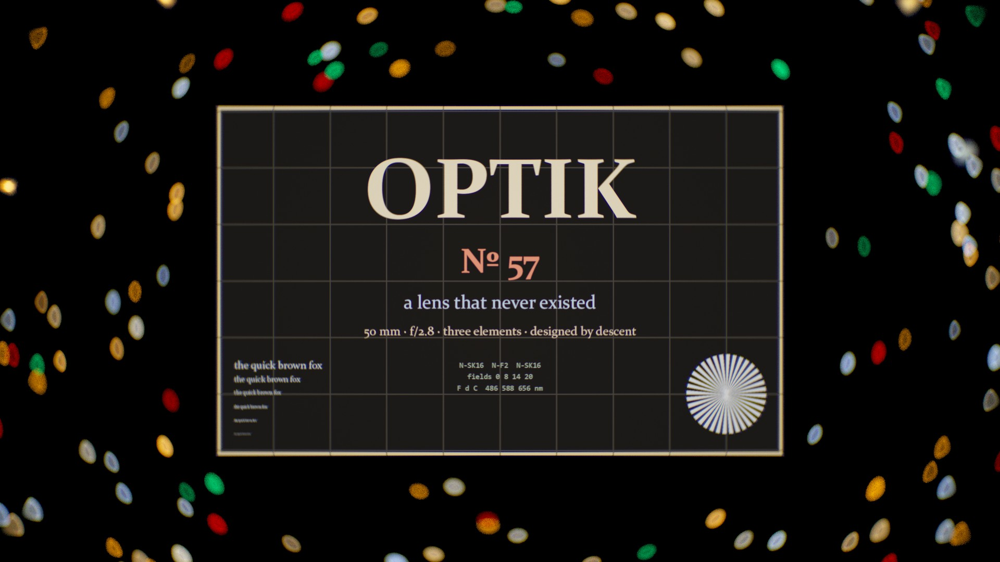
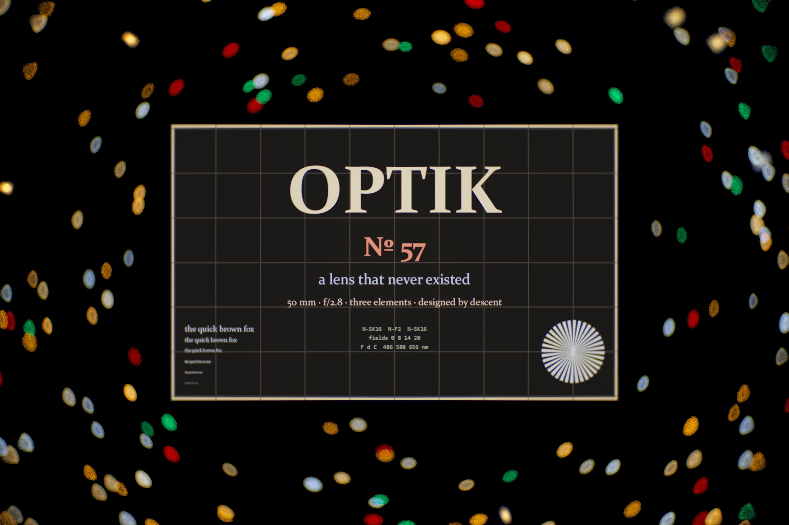
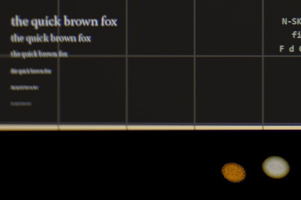
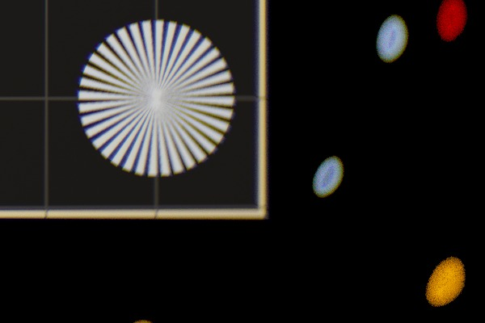
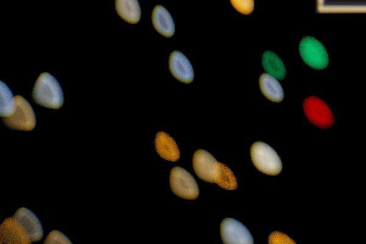
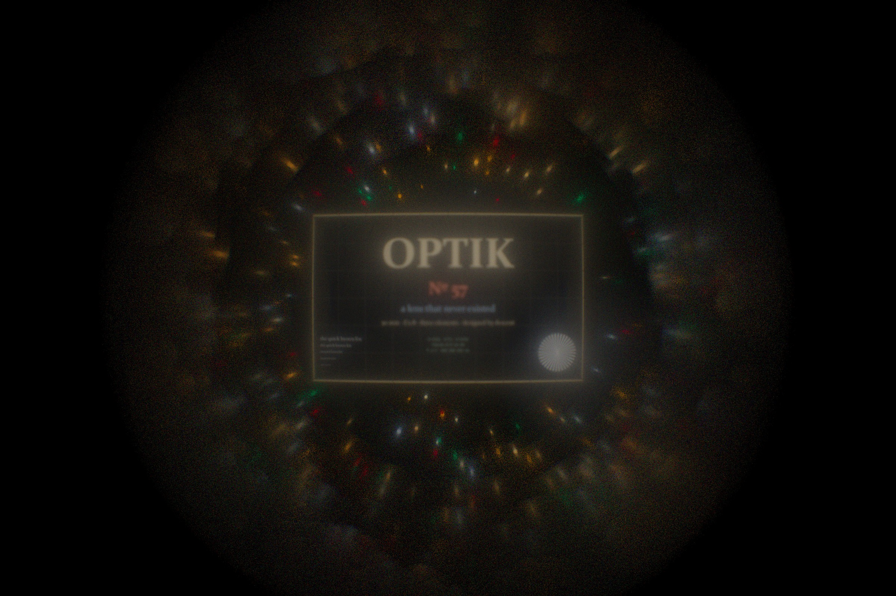
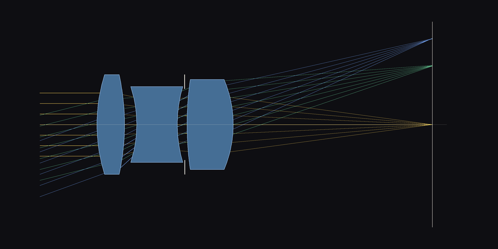
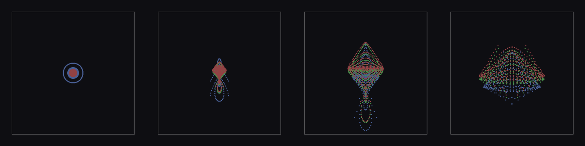

A LENS THAT NEVER EXISTED
A 50 mm f/2.8 camera lens with three pieces of glass in it, and nobody chose the curves. I wrote a ray tracer that light can be differentiated through, gave it three identical lumps of glass and one instruction (light from four directions should each land in a point, and the focal length should be 50 mm), and let gradient descent bend the surfaces. Then I photographed a night scene through the finished lens, one ray and one wavelength at a time, so the colour fringes, the cat's-eye bokeh and the soft corners are the lens's own faults. The prescription is below. Nobody has ground this glass.

The film: the photograph through the starting lumps, then 52 seconds of the surfaces bending and the picture sharpening while the spot diagrams shrink, then the final photograph and the prescription. Watch on YouTube.
The photograph

Through the finished lens, focused on a sign 1.5 m away, 36 by 24 mm sensor, 2400 by 1600 pixels, 2048 rays per pixel, each ray a single wavelength between 380 and 720 nm. Full size.
{kind=link}



Before and after

The prescription
| # | radius mm | thickness mm | glass | nd | Vd | semi-ap. |
|---|---|---|---|---|---|---|
| 1 | 35.132 | 5.833 | N-SK16 | 1.6204 | 60.3 | 10.5 |
| 2 | -49.186 | 2.522 | air | 10.5 | ||
| 3 | -25.857 | 8.587 | N-F2 | 1.6201 | 36.4 | 8.0 |
| 4 | 28.248 | 1.514 | air | 8.0 | ||
| 5 | flat (stop) | 0.501 | air | 7.5 | ||
| 6 | 68.313 | 9.743 | N-SK16 | 1.6204 | 60.3 | 9.5 |
| 7 | -24.293 | 41.890 | air | 9.5 |
Focal length 50.001 mm, back focal distance 41.89 mm, f/2.76 (entrance pupil 18.1 mm across, 16.7 mm behind the front vertex). Glass from the Schott catalogue, Sellmeier dispersion. RMS spot radius at 0, 8, 14 and 20 degrees: 10, 23, 50, 66 µm, averaged over the F, d and C lines. Distortion -0.6 to -0.7 percent (barrel). Lateral colour F to C at 20 degrees: 31 µm. Fraction of the full pupil that gets through at 0, 8, 14, 20 degrees: 0.92, 0.89, 0.82, 0.69.
Prescription (JSON) Starting point (JSON)

How descent designed it
A lens is seven numbers for curvature and seven for spacing. Everything else about it, where a ray lands on the sensor, the focal length, whether the ray even gets through, is a chain of sphere intersections and Snell's law, and every step of that chain is differentiable. So I wrote the tracer in torch: a ray hits a sphere (Spencer and Murty's form, which stays stable when the surface is nearly flat), bends by the vector form of Snell's law with the glass's index at that ray's wavelength, and moves on. A bundle of 24 rays across the pupil, for each of four field angles and three wavelengths, is 288 rays, and the merit is the mean squared distance of each ray from its bundle's centre on the sensor, plus a penalty when the focal length leaves 50 mm, when the f-number leaves 2.8, when too many rays are lost at the edge of the field, when the grid distorts, and when a piece of glass gets thinner than a real one can be at its centre or edge.
The start was deliberately dumb: three biconvex lumps with 30 mm radii on every surface and made-up spacings. It is a 28 mm f/1.2 with an 8 mm blur. Adam runs 3000 steps with a cosine learning rate (the parameters scaled so a step moves curvature and thickness by similar amounts), then L-BFGS polishes for 300 evaluations. Each evaluation is one batched trace, 68 ms on the GPU, so the whole design took under five minutes. The film's timeline is that history, warped so the parts where the lens changes fastest get the most screen time.
What descent found is a recognisable Cooke triplet: positive crown, negative flint, stop, positive crown, with the flint strongly biconcave and the rear crown doing most of the focal work. That is not a coincidence I engineered; the glass order and the position of the stop were fixed, and the shapes are what the merit wanted. A designer would call the result mediocre at the field edge. Ten microns on axis is respectable for three uncoated spheres at f/2.8, but 66 µm at 20 degrees is soft, and the sensor's corners, at 23 degrees, are beyond the field the merit ever saw. You can see it in the photograph: the corners go to ovals and the text softens off centre.
The photograph is the same tracer run the other way. For every pixel, 2048 rays start on the sensor, aim at points spread over the rear element, trace back out through the glass and into a scene of emitting planes: a backlit sign at 1.5 m, fairy lights at 0.65 and 0.9 m, four planes of city lights from 9 to 50 m. Each ray carries one wavelength; the sign's colours are lifted to smooth spectra, the lights are black bodies at 2200 to 9000 K or a sodium or neon line, and the result is integrated against the CIE 1931 colour-matching functions. Nothing in the image is a filter or a blur. The vignetting is rays hitting the barrel, the bokeh shape is the entrance pupil as seen from that pixel, the fringes are dispersion.
Caveats, plainly
This lens has not been made and I have no way to make it. The design is geometric only: spherical surfaces, no coatings, no reflections, no ghosts, no diffraction, no Fresnel losses, so the real thing would be dimmer, lower in contrast and, on axis, limited by diffraction before it is limited by these spots. The merit is a spot-size objective, which is the oldest and crudest one; a working designer would use wavefront or MTF, would tolerance the result against manufacturing errors, and would let the glass types vary. I fixed the glasses and the stop position by hand, so the descent found the shapes and not the type. The starting point is my choice, and a small search from perturbed starts found nothing better than this basin. The scene is invented and the sign is my own; the fairy lights in the near foreground come out as broad faint discs and are barely visible in the frame. The 20 degree field does not reach the sensor's corners. The design is a competent student triplet, not a product.
Sources
The triplet layout is H. Dennis Taylor's, patented for Cooke of York in 1893. Glass data are Schott's published Sellmeier coefficients for N-SK16 and N-F2. Sphere intersection follows Spencer and Murty, "General ray-tracing procedure", JOSA 52 (1962). The colour-matching functions use Wyman, Sloan and Shirley's multi-lobe fit (JCGT 2013). Differentiable ray tracing for lens design has a literature of its own (Sun et al., "End-to-end complex lens design with differentiable ray tracing", 2021, among others); this is a small, hand-written version of the idea. Everything runs in PyTorch on one GPU.